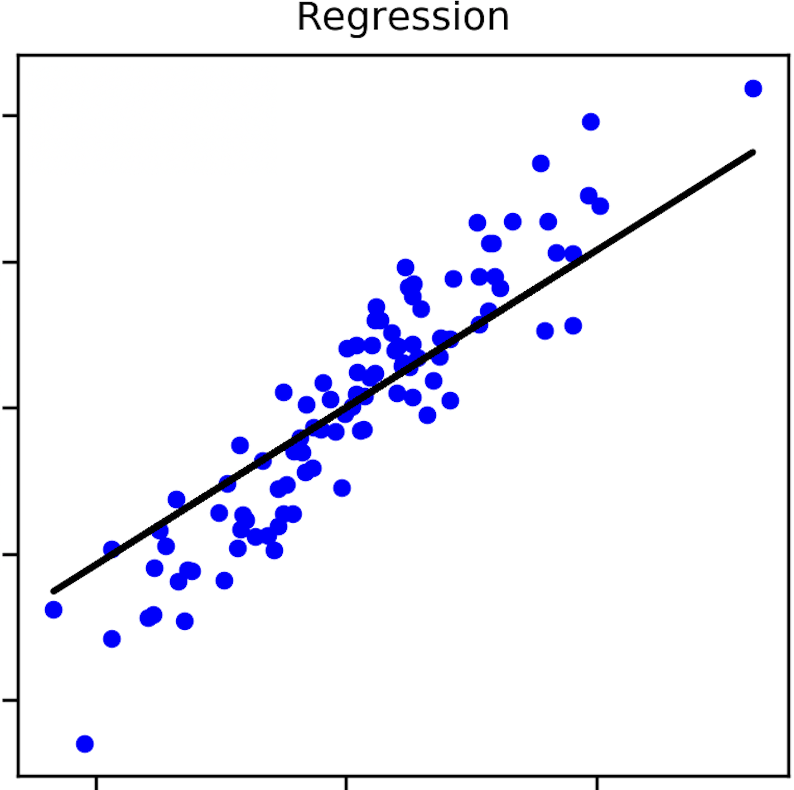

Ulyana Plaksiy
"Sztuczna Inteligencja z JavaScript" [PL]
2020-02-12
Agenda
- Definicje
- Release log czyli jak powstała technologia Tensorflow.js
- Zalety i wady w używaniu
- Pokaż mi kod !
- Żródła
Definicje
Machine Learning (ML, uczenie maszynowe) - zdolność komputerów do uczenia się bez programowania nowych umiejętności wprost (Arthur Samuel, 1959).
ML model to wynik (output), który jest generowany podczas trenowania algorytmów uczenia maszynowego (np. Linear Regression, Decision Tree algorithm) przy użyciu danych wejściowych (input data).
Definicje
Czy społeczność WarsawJS podwoi się do końca 2020?
Czy Polska zdobędzie mistrzostwo w EURO 2020?

M-ny wzrost ilości osób w społeczności WarsawJS
Trend wzrostu cen mieszkań w Polsce w 2020
Definicje
Tensorflow.js to biblioteka do uczenia maszynowego w JavaScript, która pozwala twórzyć modele ML w JavaScript i używać je bezpośrednio w przeglądarce lub w środowisku Node.js.
import * as tf from '@tensorflow/tfjs';
const path = 'http://localhost:3000/models/mobilenet/model.json';
onLoadModel = async () => {
this.model = await tf.loadModel(path);
}
Release log czyli jak powstała technologia Tensorflow.js
Zalety
- wykorzystanie procesora graficznego po stronie klienta - lepsza wydajność
- importowanie oraz używanie gotowych ML modeli
- tworzenie, trenowanie oraw testowanie własnych ML modeli
- większa prywatność danych - brak przechowywania danych na serwerze
- testy po stronie klienta - brak requestów do Flask API
- szybki start dla początkujących - nie jest wymagana znajomość ekosystemu
Scali / R / Pythona
Wady
- ograniczenie danych - nie ma domyślnego dostępu do systemu plików w środowisku hosta przeglądarki. Ogranicza to dostępne zasoby danych i (może ograniczać) rozmiary plików
- problemy z wydajnością przy bardziej złozonych modelach - używanie Tensorflow.js z WebGL sprawia, że jest on znacznie wolniejszy niż np. Tensorflow w Pythonie z AVX. W przeglądarce proste modele można trenować znacznie szybciej, jednak większe modele będą trenować się znacznie dłużej